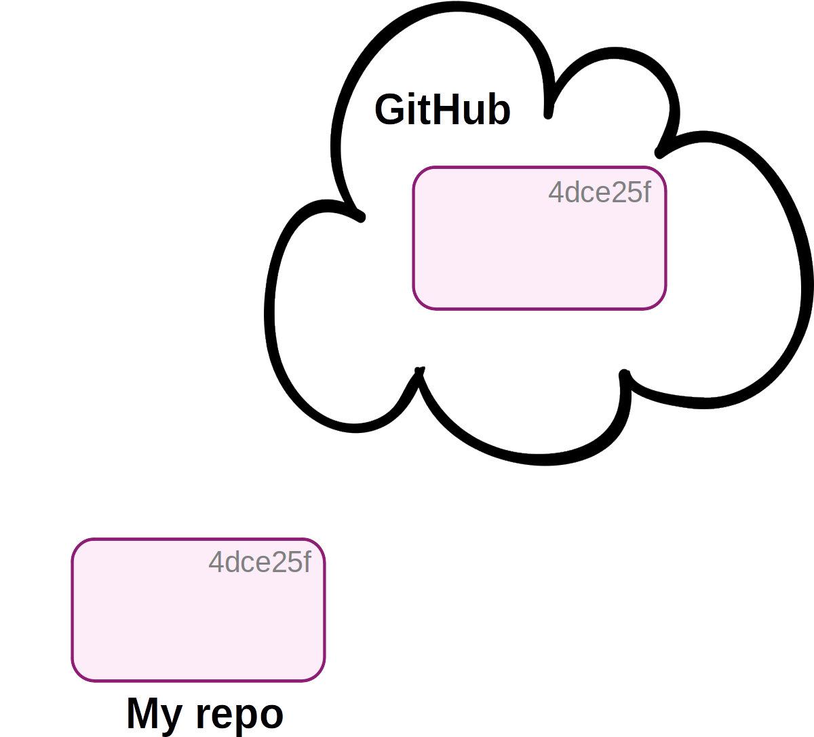
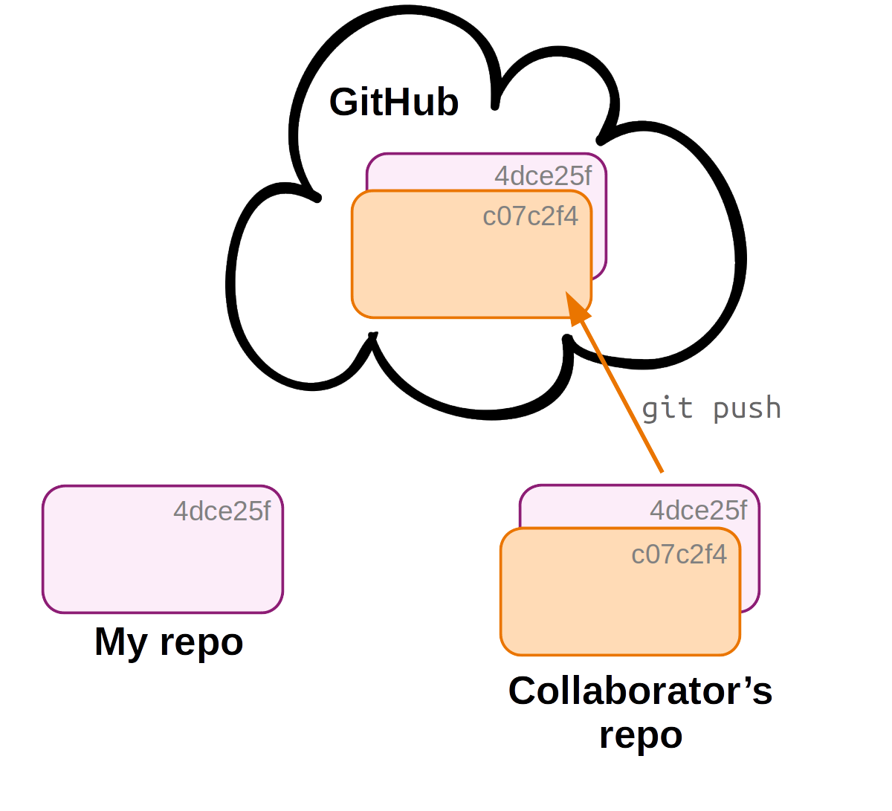

Git: Remotes on GitHub
Week 3 - Part II
1 Overview
Overview of this session
- Remote repositories on GitHub
- Some Git best practices
- Launch VS Code at https://ondemand.osc.edu as before, at the dir
/fs/ess/PAS2700/users/$USER, and open a terminal in VS Code. - Load the OSC Git module1: run
module load git/2.39.0. - In the terminal,
cdto yourweek03/originspeciesdir.
2 Remote repositories
So far, we have been locally version-controlling our originspecies repository. Now, we also want to put this repo online, so we can:
- Share our work (e.g. alongside a publication) and/or
- Collaborate with others and/or
- Have an online backup.
We will use the GitHub website as the place to host our online repositories.
Online counterparts of repositories that we also have locally are usually referred to as “remote repositories” or simple “remotes”. To add and manage remotes, we use the git remote command.
2.1 One-time setup: GitHub authentication
To be able to link local Git repositories to their online counterparts on GitHub, we need to set up GitHub authentication.
Regular password access (over HTTP/HTTPS) is now “deprecated” by GitHub, and two better options are to set up SSH access with an SSH key, or HTTPS access with a Public Access Token.
We’ll use SSH, as it is easier – though still a bit of drag – and because learning this procedure will also be useful for when you’ll be setting up SSH access to the Ohio Supercomputer Center. (But note that GitHub now labels HTTPS access as the “preferred” method.)
For everything on GitHub, there are separate SSH and HTTPS URLs, and GitHub can always show you both types of URLs. When using SSH, we need to use URLs with the following format:
git@github.com:<USERNAME>/<REPOSITORY>.git(And when using HTTPS, you would use URLs like https://github.com/<USERNAME>/<REPOSITORY>.git)
Use the
ssh-keygencommand to generate a public-private SSH key pair like so:ssh-keygen -t rsaYou’ll be asked three questions, and for all three, you can accept the default by just pressing Enter:
# Enter file in which to save the key (<default path>): # Enter passphrase (empty for no passphrase): # Enter same passphrase again:

Now, you have a file called
id_rsa.pubin your~/.sshfolder, which is your public key. To enable authentication, we will put this public key on GitHub — our public key interacts with our private key, which we do not share.
Print the public key to screen usingcat:cat ~/.ssh/id_rsa.pubCopy the public key, i.e. the contents of the public key file, to your clipboard. Make sure you get all of it, including the “
ssh-rsa” part (but beware that your new prompt may start on the same line as the end the key):

In your browser, go to https://github.com and log in.
Go to your personal Settings. (Click on your avatar in the far top-right of the page, and select
Settingsin the drop-down menu.)Click on
SSH and GPG keysin the sidebar.Click the green
New SSH keybutton.Give the key an arbitrary, informative name, e.g. “OSC” to indicate that you are using this key at OSC.
Paste the public key, which you copied to your clipboard earlier, into the box.

- Click the green
Add SSH keybutton. Done!
2.2 Creating a remote repository
While we can interact with online repos using Git commands, we can’t create a new online repo with the Git CLI. Therefore, we will to go to the GitHub website to create a new online repo:
- Go to https://github.com and sign in.
- In the top-right, click the
+next to your avatar and then select “New repository”:

- In the box “Repository name”, we’ll use the same name that we gave to our local directory:
originspecies2.

- Leave other options as they are, so don’t check any of these boxes, and click “Create repository”:


VS Code does provide functionality to create GitHub repos directly. If you’re interested, look for the GitLens VS Code extension by Eric Amodio.
2.3 Link the local and remote repositories
After you clicked the “Create repository”, a page with information similar to this screenshot should appear, which gives us some information about linking the remote and local repositories:
We go back to our Unix shell in VS Code, where we’ll enter the commands that GitHub provided to us under the “…or push an existing repository from the command line” heading shown at the bottom of the screenshot above:
First, we tell Git to add a “remote” connection with
git remote. We provide three arguments to this command:add— because we’re adding a remote.origin— the arbitrary nickname we’re giving the connection (usually called “origin” by convention).
- The SSH URL to the GitHub repo (you can click on the
HTTPS/SSHbutton to toggle the URL type).
# git remote add <remote-nickname> <URL> git remote add origin git@github.com:<user>/originspecies.gitSecond, we push our local repo to remote using
git push. Whenever we push a repository3 for the first time, we need to use the-uoption to set up an “upstream” counterpart:# git push -u <connection> <branch> git push -u origin main
Note that when we don’t give git push any arguments, it will push:
- To & from the currently active branch (default:
main) - To the default remote connection.
Therefore, from now on, we can simply use the following to push:
git push2.4 Explore the repository on GitHub
Back at GitHub, click on <> Code in the lower of the top bars. There, we can see the files that we just uploaded from our local repo.

Next, click where it says x commits (should be 5) with a clock icon, and you’ll get an overview of commits, somewhat similar to what we’ve seen when we ran git log:

On the right hand side, there are three buttons for each commit:
- Click the hash (hexadecimal ID,
5aff0aein the screenshot below) to see changes made by that commit. - Click the < > to see the state of the repo at the time of that commit.

3 Remote repo workflows: single-user
In a single-user workflow, all changes are made in the local repo, and the remote repo is simply periodically updated (pushed to). So, the interaction between local and remote is unidirectional:



When we have a remote in a single-user workflow, we commit as usual in our day-to-day work, and in addition, push to remote occasionally — let’s run through an example.
We start by creating a
README.mdfile for our repo:echo "# Origin" > README.md echo "Repo for book draft on my new **theory**" >> README.mdWe add and commit the file:
git add README.md git commit -m "Added a README file"[main 63ce484] Added a README file 1 file changed, 2 insertions(+) create mode 100644 README.mdNow, we push to the remote repository:
git pushTODO
Let’s go back to GitHub: we should see that the contents of the README.md automatically shows up as a rendered Markdown file!
TODO ADD SCREENSHOT
4 Remote repo workflows: multi-user
The added command is git pull EXPAND



With a multi-user workflow, changes made by different users are shared via the online copy of the repo. But note that syncing is not automatic:
- Changes to your local repo remain local-only until you push to remote.
- Someone else’s changes to the remote repo do not make it into your local repo until you pull from remote.
When your collaborator has made changes, Git will tell you about “divergence” between your local repository and the remote when you run git status:

4.1 What can you do with someone else’s GitHub repository?
In some cases, you may be interested in working in some way with someone else’s repository that you found on GitHub. If you do not have rights to push, you can:
- Clone the repo and make changes locally (as we have been doing with the
CSBrepo). When you do this, you can also periodically pull to remain up-to-date with changes in the original repo. - Fork the repository on GitHub and develop it independently. Forking creates a new personal GitHub repo, to which you can push.
- Using a forked repo, you can also submit a Pull Request with proposed changes to the original repo: for example, if you’ve fixed a bug in someone else’s program.
If you’re actually collaborating on a project, though, you should ask your collaborator to give you admin rights for the repo, which makes things easier.
4.2 GitHub “Issues”
Each GitHub repository has an “Issues” tab — issues are mainly used to track bugs and other (potential) problems with a repository. In an issue, you can reference specific commits and people, and use Markdown formatting.
5 Some Git best-practice tips
- Write informative commit messages.
Imagine looking back at your project in a few months, after finding an error that you introduced a while ago.- Not-so-good commit message: “Updated file”
- Good commit message: “In file x, updated function y to include z”

It is often argued that commit messages should preferably be in the form of completing the sentence “This commit will…”: When adhering to this, the above commit message would instead say “In file x, update function y to include z.”.
Commit often, using small commits.
This will also help to keep commit messages informative!Before committing, check what you’ve changed.
Usegit diff [--staged]or VS Code functionality.Avoid including unrelated changes in commits.
Separate commits if your working dir contains work from disparate edits: usegit add+git commitseparately for two sets of files.When collaborating: pull often.
This will reduce the chances of merge conflicts.Don’t commit unnecessary files.
These can also lead to conflicts — especially automatically generated, temporary files.Tags
If you have a repo with general scripts, which you continue to develop and use in multiple projects, and you publish a paper in which you use these scripts, it is a good idea to add a “tag” to a commit to mark the version of the scripts used in your analysis:git tag -a v1.2.0 -m "Clever release title" git push --follow-tags